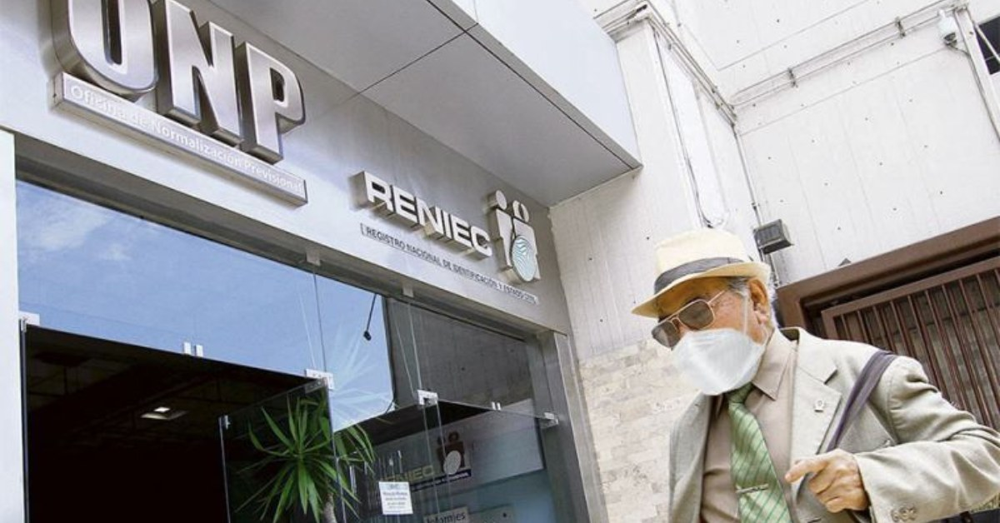

Lima. El Banco Pichincha Perú obtuvo la autorización de la Superintendencia de Banca, Seguros y AFP (SBS) para adquirir el 100% de las acciones representativas del capital social de Diners Club Perú S.A., en una operación valorizada en S/ 23 millones 474 mil 937. La aprobación, contenida en la Resolución SBS N.° 02290-2026, fue comunicada por la entidad financiera a la Superintendencia del Mercado de Valores (SMV) mediante un Hecho de Importancia difundido el jueves 17 de septiembre de 2026.
Con este visto bueno regulatorio, la compañía de tarjetas de crédito —con más de cinco décadas de presencia en el mercado peruano— pasará a constituirse como empresa subsidiaria del banco, integrando su estructura corporativa y ampliando las capacidades del grupo financiero en el segmento de medios de pago.
Una operación cocinada desde enero
El proceso de adquisición no fue improvisado. Según detalla la resolución de la SBS, el Directorio de Banco Pichincha aprobó inicialmente la operación en su sesión del 20 de enero de 2026, cuando se acordó adquirir al menos el 94,77% de las acciones de Diners Club Perú. Posteriormente, el 26 de mayo de 2026, el órgano directivo ratificó la decisión y amplió el alcance hasta alcanzar la totalidad del accionariado, fijando el monto definitivo de la transacción.
La legislación peruana, específicamente la Ley General del Sistema Financiero y del Sistema de Seguros y Orgánica de la SBS (Ley N.° 26702), faculta a las empresas bancarias a adquirir, conservar y vender acciones de sociedades que brinden servicios complementarios o auxiliares, así como a constituir subsidiarias para realizar operaciones vinculadas con cobros, pagos, transferencias de fondos y, precisamente, la expedición y administración de tarjetas de crédito y débito.

Banco Pichincha Perú consolida su estrategia de crecimiento inorgánico con la compra de Diners Club.
Diners Club: pionera de las tarjetas en el Perú
Diners Club tiene una historia que se remonta a 1950, cuando Frank McNamara revolucionó la industria de los pagos al crear la primera tarjeta de crédito de uso generalizado. En el Perú, su llegada se produjo en 1967, cuando el empresario José Antonio Schiaffino recibió la primera tarjeta Diners Club emitida en el país. Desde entonces, la firma se consolidó como un símbolo de prestigio y exclusividad, con una base de clientes concentrada en los segmentos profesional, industrial y comercial.
A lo largo de las décadas, Diners Club Perú diversificó sus servicios y se mantuvo como una marca reconocida en el mercado local. En 2009, la compañía fue la primera en el mundo en certificar la interoperabilidad entre las redes de Diners Club International y Discover Financial Services, un hito tecnológico que amplió la aceptación de sus tarjetas a nivel global.
La resolución de la SBS precisa que la operación no establece, por ahora, modificaciones respecto a la marca Diners Club, los productos que ofrece a sus clientes ni las condiciones asociadas a sus tarjetas. Es decir, los usuarios continuarán operando con normalidad mientras se completa la integración societaria.
El comprador: un banco con raíces profundas
Banco Pichincha Perú no es un recién llegado. Su historia se inicia en julio de 1964 bajo la denominación de Financiera y Promotora de la Construcción S.A. (FINANPRO). En noviembre de 1986, la compañía se convirtió en empresa bancaria y cambió su nombre a Banco Financiero del Perú. No fue hasta agosto de 2018 cuando adoptó la marca Banco Pichincha, tras la renovación de su imagen institucional y su integración al grupo financiero ecuatoriano del mismo nombre.
En la actualidad, Banco Pichincha se posiciona como un banco múltiple con una oferta que abarca banca personal, empresarial y corporativa. La adquisición de Diners Club le permite verticalizar su negocio de medios de pago, capturando directamente la emisión y administración de tarjetas de crédito, en lugar de depender exclusivamente de alianzas con terceros.
Implicancias para el mercado y los usuarios
La incorporación de Diners Club Perú como subsidiaria de Banco Pichincha representa un movimiento estratégico en un mercado cada vez más competitivo. El sistema financiero peruano ha visto en los últimos años una intensa competencia en el segmento de tarjetas de crédito, con actores como Interbank, BCP, BBVA y Scotiabank disputándose una base de usuarios que supera los 8 millones de tarjetahabientes.
Desde la perspectiva del regulador, la operación se ajusta al marco normativo vigente. La SBS verificó que Banco Pichincha presentó la documentación requerida y que la solicitud cumplía con el procedimiento establecido para la constitución de subsidiarias de entidades del sistema financiero.
Para los clientes de Diners Club, el escenario inmediato es de continuidad. La resolución no contempla cambios en las condiciones contractuales, programas de beneficios ni esquemas de lealtad. Sin embargo, en el mediano plazo, la integración podría traducirse en sinergias operativas, nuevos productos combinados y una mayor capilaridad de la red de aceptación, aprovechando la infraestructura de Banco Pichincha.

Diners Club, la primera tarjeta de crédito en llegar al Perú en 1967, ahora formará parte del grupo Banco Pichincha.
Un mercado en transformación
La adquisición de Diners Club por parte de Banco Pichincha se suma a una serie de movimientos corporativos que están reconfigurando el sector financiero peruano. La digitalización de los servicios, la irrupción de las fintech y la creciente preferencia de los usuarios por soluciones de pago ágiles están obligando a los bancos tradicionales a repensar sus modelos de negocio.
En ese contexto, controlar una franquicia de tarjetas con el reconocimiento de marca de Diners Club otorga a Banco Pichincha una ventaja diferencial. La emblemática tarjeta verde y blanca, asociada durante décadas a un segmento premium, aporta un activo intangible difícil de replicar: prestigio, confianza y una base de clientes fidelizada.
El desenlace de esta operación será seguido de cerca por analistas, competidores y reguladores. Si la integración se ejecuta con éxito, Banco Pichincha podría emerger como un jugador más robusto en el competitivo mercado de medios de pago peruano. Para Diners Club, la alianza con un banco de la envergadura de Pichincha representa una oportunidad para escalar su propuesta de valor en un entorno donde la innovación y la experiencia del cliente son cada vez más determinantes.
Con la Resolución SBS N.° 02290-2026, el camino está allanado. La pelota ahora está en la cancha de Banco Pichincha, que deberá demostrar que la adquisición no solo tiene sentido financiero, sino que se traduce en beneficios tangibles para los usuarios y en un fortalecimiento genuino del ecosistema financiero peruano.